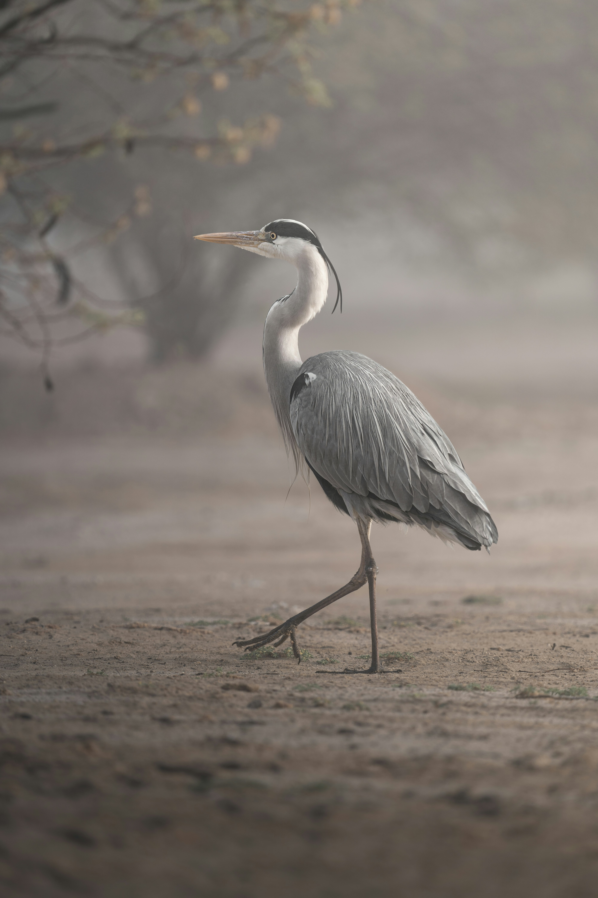

The Grey Heron is a large, long-legged wading bird with a long pointed bill, grey wings, white head and neck, and a black crown stripe. It usually hunts from shallow water, standing motionless before striking quickly at fish and other prey. It is widespread across wetlands and can often be seen standing alone along rivers, lakes, ponds, and coastal waters.